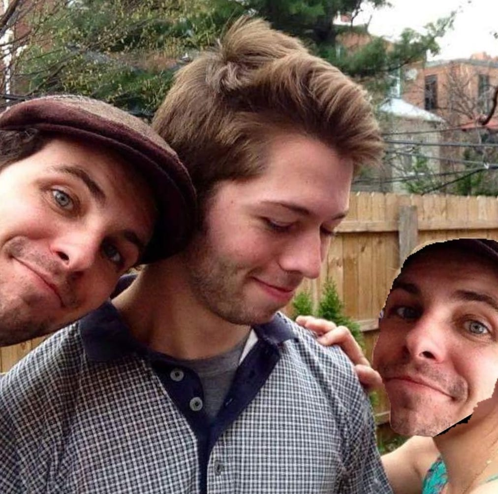

Drunk Guys Announce Sports
FAQ:
Who are you?
I'm Dan!
My sidekick is my trusty friend Duncan. Here's a picture of us:
Is this for real?
Yes.
Can I pay you to say stupid things on the air and/or choose what you drink?
ABSOLUTELY. Shoot me an email: reardon.danielj AT gmail.
Why are you doing this?
Because it’s an excuse to get drunk and watch sports with our friends, while allowing us to entertain the delusion that we're actually working.
No, really - I want a longer and more academic answer.
Okay, here goes:
The best part of watching sports is sitting around with your friends, drinking and shooting the shit. That can be hard when you and your good friends live in different cities and don’t see each other that often. I wanted to simulate the environment that I experienced in college - 7 best friends living together in a house, having a beer and enjoying the game. I’m currently living alone in NYC and miss that atmosphere. I figure there are a lot of people in a similar situation who may get something out of these livestreams.
Additionally, the model of a sports broadcaster meant to appeal to the masses is completely outdated and boring for many audiences. The internet allows discussion of real-time events with likeminded people on communities like Twitter and Reddit. Broadcasts should be the same.
With the rise of livestreaming, broadcasts can be micro-targeted to segments of the population who are looking for something different than a 70-year-old white dude meant to be as vanilla and palatable as possible.
Here is a great article that explains the thought process. (Search "Justin Fox" - start with that paragraph.)
Serious: What about alcoholism?
We plan to only do this about once a month, and will not let the drinking get out of control. We have close friends checking in with us to make sure that this does not become a problem.
If you or one of your loved ones struggles with drugs or alcohol, please seek professional help.
Why don’t you just go to the bar and watch sports with your friends?
We sometimes do that too 😎.
Whose dog is that in the picture?
I have no idea. Honestly.
Do you provide lunch?
Didn’t anyone ever tell you there’s no such thing as a free lunch?
I suppose this is the exception! Subscribe to our Twitch - we will give one lucky subscriber a free sandwich. Yay!
How do you make money on this?
We don’t. We have a normal jobs - this is a side project purely for fun.
I want to work with you/grab a drink with you/be a Drunk Guy.
How flattering! Shoot me an email and I'll do my best to get back to you: reardon.danielj AT gmail.
This idea is stupid.
That’s not a question. And you’re stupid.
No seriously, I’m going to leave the website now.
You’re at the bottom of the FAQ page on a website called Drunk Guys Announce Sports. That’s probably a good decision.
©2018 Dan Reardon